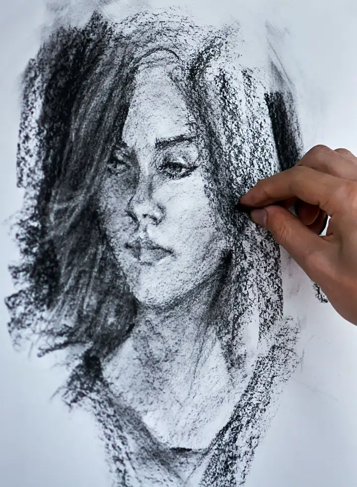

The Evening Sitter
Charcoal on paper · Drawing
Price Quote on request
Inquire on WhatsAppMara Ellison
Drawings first, then paint. Portraits, animals, and other pieces, with the price line left blank until we have talked.
Turn to the studies
The Evening Sitter
Charcoal on paper
Price Quote on request
Twelve sheets, divided the way a colour card is divided. Choose a medium. Nothing on this page has a price.
12 studies
Nothing in this division.
Charcoal on paper · Drawing
Price Quote on request
Inquire on WhatsAppGraphite on paper · Drawing
Price Quote on request
Inquire on WhatsAppGraphite on paper · Drawing
Price Quote on request
Inquire on WhatsAppWatercolour on canvas
Price Quote on request
Inquire on WhatsAppWatercolour
Price Quote on request
Inquire on WhatsAppWatercolour
Price Quote on request
Inquire on WhatsAppWatercolour on canvas
Price Quote on request
Inquire on WhatsAppOil pastel on canvas · Oil/Acrylic
Price Quote on request
Inquire on WhatsAppAcrylic on canvas · Oil/Acrylic
Price Quote on request
Inquire on WhatsAppOil on canvas · Oil/Acrylic
Price Quote on request
Inquire on WhatsAppGraphite in a sketchbook
Price Quote on request
Inquire on WhatsAppWatercolour in a sketchbook
Price Quote on request
Inquire on WhatsAppA commission usually passes through three stations. These are three different works, one for each station, not one picture photographed three times.
First, graphite, while the person is still in the room. Margin Note is that kind of sheet. If the likeness is wrong, this is the moment to say so, before any paint is mixed.
Then a thin colour study, to see whether the light holds. Glass Vase could stay a watercolour. It could also tell an oil what to do.
Last, oil or acrylic, and only after the drawing has settled. Seated Figure is that station. The quote is agreed before the canvas is started.
I take a small number of pieces by correspondence. You write, I ask a few questions, and I send a quote. There is no cart and no payment on this page.
A person, from photographs, or from a sitting if we are in the same place. You see the drawing before any paint goes down.
Dogs, cats, and the animals that share a chair. Round Hound is the kind of sheet this becomes: the animal first, the room second.
A room, a bowl of fruit, a view you keep returning to. Tell me the thing, and I will say whether it wants graphite, watercolour, or oil.
Price Quote on request
Request a commission on WhatsAppMara Ellison draws before she paints. Ink & Linen is the name she uses for that order of work: graphite, then a wash, then oil or acrylic if the drawing still feels true.
She works by correspondence. A portrait, an animal, or another piece starts with a note and a few pictures. She answers with questions, a drawing, and a quote. There is no shop here.
The sheets on this page are photographs by other people, standing in so the studio can be seen. Their names are in the footer. Mara herself is fictional.
WhatsApp is the studio door. A note about a work already includes its name. A commission note asks for a quote. There is no form on this page, and no other number.
Write on WhatsApp and say what you are holding in mind.
Write on WhatsApp